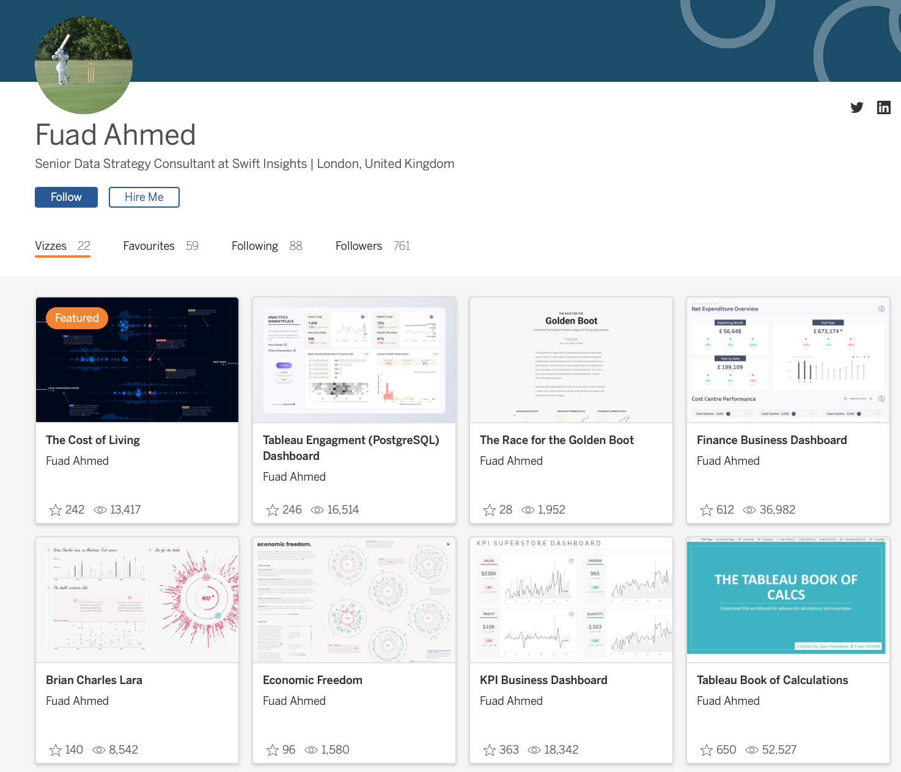
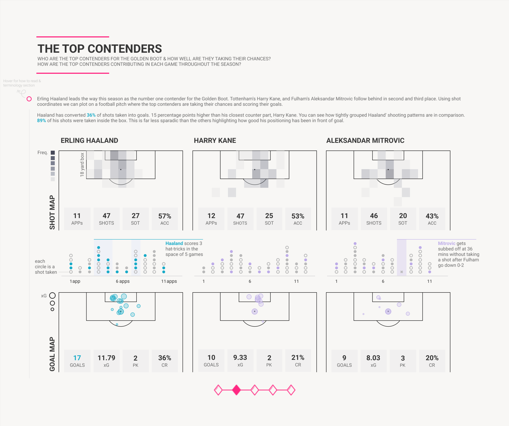
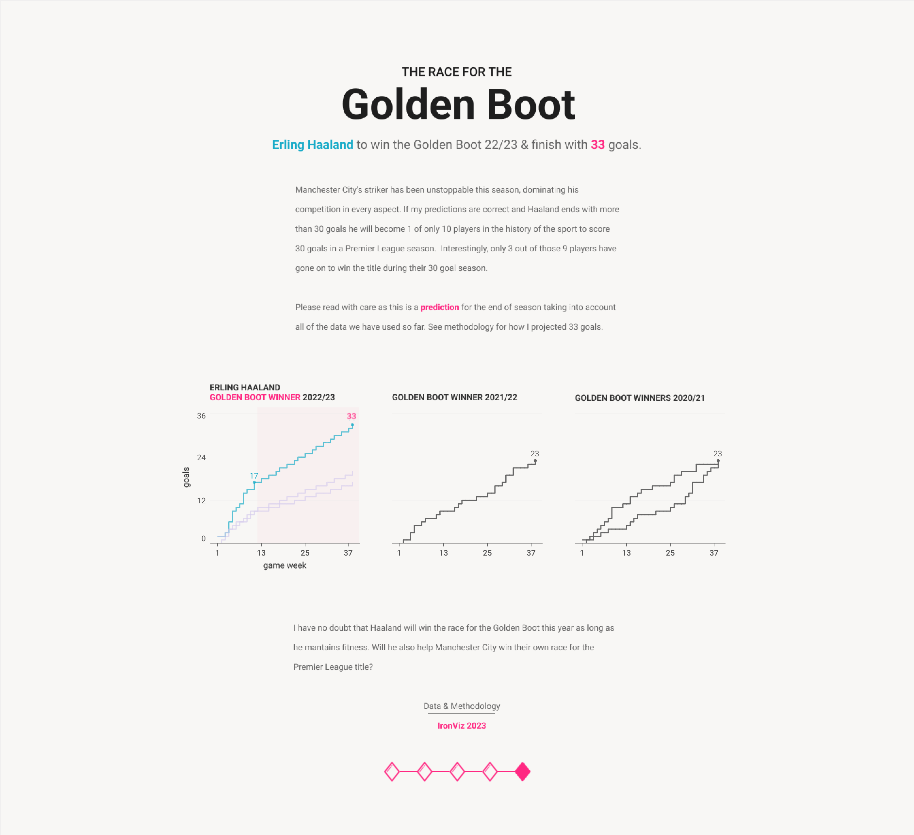
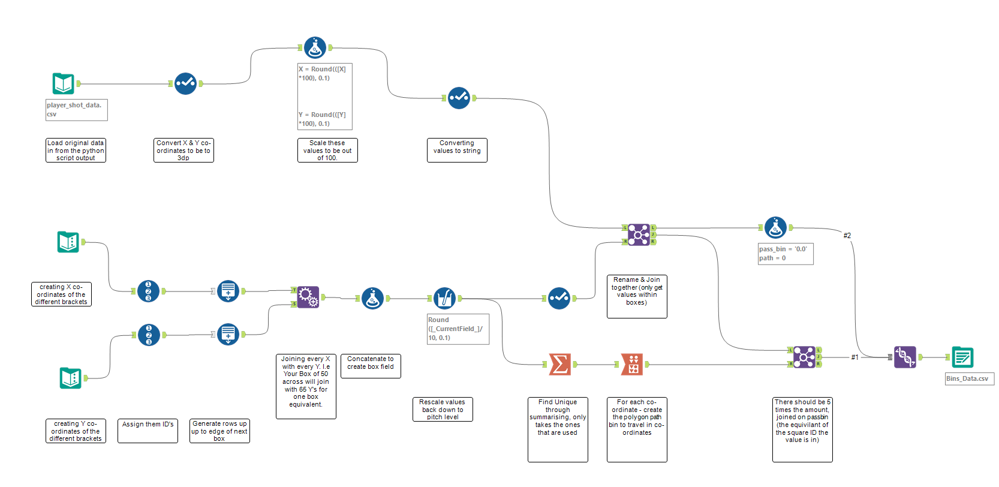
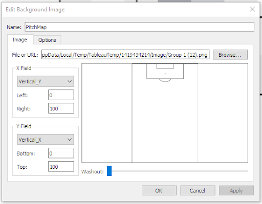
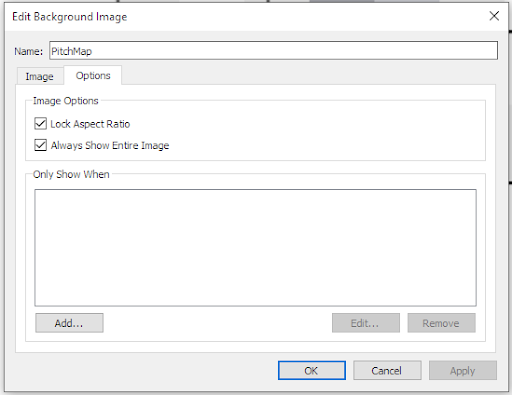
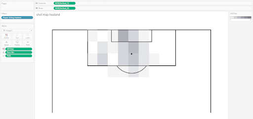
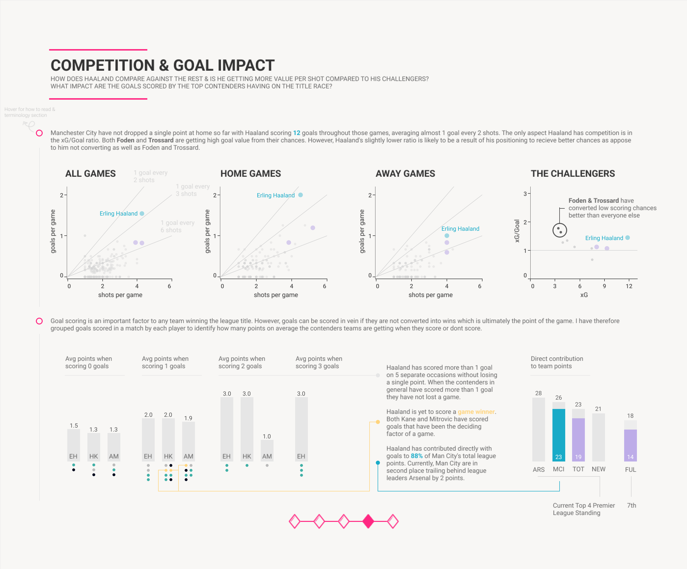
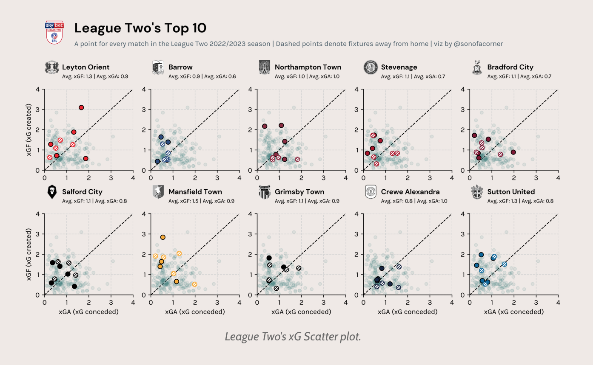

Hi all,
I am so excited today to have Fuad join the site today to showcase an alternative method of creating heatmaps, this time using Alteryx and Tableau. Fuad can be found on twitter, here.

Many of us by now have the logic to create them probably using either python or r, and whilst that may do the job justice, I am a huge fan of being able to emulate similar outputs in other software.I think with different software come different methodologies (whilst perhaps a similar approach), but also allow flexibility in output and certainly have allowed Fuad to flex his design skills.Speaking of output, for me, Fuad Ahmed created one of the most beautiful soccer vizzes I have seen all year. I would urge you to check out his full visualisation.

CJ: Fuad, great to have you join. Can you tell us a little more about your passion for football and the types of metrics you focused on for your IronViz entry?Hey CJ! Thanks for having me, it's a pleasure to feature in one of your blogs. As you already know I'm a huge fan of your work and I look forward to seeing what you have in store for us in 2023.My earliest memories of football actually started with La Liga. I remember watching Ronaldhino at Barcelona before the GOAT (Messi) came along. The football Barcelona played and the flair Ronaldhino had really made me fall in love with the sport. For my IronViz I wanted to highlight the significance of Haaland's goal-scoring contribution and compare it to others in the Premier League. My focus was on 3 key areas:
Where was he scoring/taking chances from?
How did he perform against the big 6?
What impact was his goal-scoring having on Man City’s league position?
These were all key aspects to telling my IronViz story but I think the 3rd one is often overlooked in football analytics at least from what I have seen. There's always a lot of attention given to the most goals or most assists but as you know looking at just a select few data points will not tell the full story. People tend to use this as a stand-alone argument over who is a better player. But I think it's equally important to highlight whether the impact a player has led to better team performance and ultimately a team win. This was the most significant factor for me and I spent a lot of time thinking about what other data points I can use to present this. In the end, it made sense to me to bring league points into the equation and analyse the direct contribution of goal scoring by the top goal scorers was having on the number of league points gained.

CJ: What was the data collection process like? Can you explain a little about the Alteryx flow for those that are new to Alteryx?
(The Alteryx workflow can be found on the GitHub repository at the top of the page, alongside some of the original datasets)
Firstly, I want to thank Peter Silvester. Peter really helped me create the workflow and data prep, without him being able to replicate the polygon binning would have been incomplete. The latter parts of the flow especially were particularly tough to piece together!

The top half of the flow takes the original data from the python script output from a blog post you've previously written, actually. I then convert all the values to be eventually 1 decimal place. We have to remember that these X and Y coordinates are important when building the background football pitch.
The bottom half of the flow creates the different X and Y boxes and assigns them each an ID.
The generate rows help to add in all the different decimal places between each 1x1 square.
Next, the find and replace tool gives all the different possibilities of shot boxes. This explodes the data up to a really big size.
By concatenating values we create essentially a box id, assigning a shot to a specific box.
After rescaling the values of our grid to be in line with our original dataset, we can glue them together to only take the box values of the data that is actually needed. Remembering that there is no point to create the boxes for the full pitch.
For polygons to work, the final thing we need to do is create a pathID, so our dataset then takes the edges of the box and creates 5IDs for it to pass through. Essentially building our polygon square.
The final data export is saved back down as Bins Data. It’s worth noting that our final dataset will be 5x the size of our original data.
CJ: Now you have the output, can you showcase in Tableau how to create a shot heatmap using polygons like on your visualisation second page?Once you have the output there are a few more steps required to get to the end result.
I imported a background image by going into the Map tab in Tableau and added an image of a football pitch outline. You can play around with the options depending on what type of image you used but here is how I set mine up. Again, the image can be found in the repository at the top of the page to download.

After I set up the background image correctly I used the bins that I created in Alteryx called X bin and Y bin and dragged them into the columns and rows and changed them to be aggregated as an average because the data is duplicated.
I then changed the mark type to a polygon and added the fields Pass Bin to detail and Path to Path.
Finally, I added the count of ID to colourwhich is equivalent to a shot taken in my data. This will give you the heatmap-style look.

CJ: Besides the technical expertise and the beauty in creating such a delicate shot map, what did you want people to take away from reading these types of charts when looking at Kane, Haaland and Mitrovic?

I wanted to show where exactly each striker was taking their chances from in front of the goal. Did they favour a certain area or what percentage of their chances were taken inside the box? We know that if you're taking chances in front of the goal in key areas there's a much higher likelihood you will score than if you're taking chances outside the box for example.I think the shot map shows this clearly and the key takeaway for me is that Haaland’s spread of chances was tight and right in front of the goal as opposed to the others who were far more sporadic and took more chances outside the box. Haaland’s positioning in front of the goal this season has been incredible and in my opinion a big reason for his success so far.CJ: You mentioned your work was inspired by a few other pieces/people in the community. Are there any specifics you’d like to call out, especially from a design perspective?Yes, definitely I'm always on the lookout for inspiration. First and foremost, I like to look outside the data viz bubble for design inspiration. I have a particular interest in cinematography and web/app design and I think there are a lot of lessons that can be learned from these industries when it comes to good storytelling and design principles.For this particular project, I did spend a lot of time on Twitter, specifically the accounts @jonollington @sonofacorner @petermckeever. They all have great content so if you're interested in football they are a must-follow. @sonofacornerfor me especially stood out. I love the aesthetic look of his work. The minimalist style of his designs and the way he is able to convey his analysis directly and clearly is something I tried to incorporate in my IronViz.

CJ Round-Up:
Awesome thanks Fuad. Hopefully a few takeaways from today. With football analytics being such a hugely competitive market it's interesting to see what catches the eye of the community online. I think there is a great balance to reporting meaningful metrics, against beautiful design. If you have both you are on for a winner.
As I mentioned, Fuad's visual this year was one of my favourites to read through both of the subject matter being soccer and also because of the elegance in design. Really looking forward to what is next from him.
LOGGING OFF,CJ